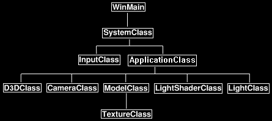

In this tutorial I will cover how to light 3D objects using diffuse lighting and DirectX 11.
We will start with the code from the previous tutorial and modify it.
The type of diffuse lighting we will be implementing is called directional lighting.
Directional lighting is similar to how the Sun illuminates the Earth.
It is a light source that is a great distance away and based on the direction it is sending light you can determine the amount of light on any object.
However, unlike ambient lighting (another lighting model we will cover soon) it will not light up surfaces it does not directly touch.
I picked directional lighting to start with because it is very easy to debug visually.
Also, since it only requires a direction, the formula is simpler than the other types of diffuse lighting such as spot lights and point lights.
The implementation of diffuse lighting in DirectX 11 is done with both vertex and pixel shaders.
Diffuse lighting requires just the direction and a normal vector for any polygons that we want to light.
The direction is a single vector that you define, and you can calculate the normal for any polygon by using the three vertices that compose the polygon.
In this tutorial we will also implement the color of the diffuse light in the lighting equation.
Framework
For this tutorial we will create a new class called LightClass which will represent the light sources in the scenes.
LightClass won't actually do anything other than hold the direction and color of the light.
We will also remove the TextureShaderClass and replace it with LightShaderClass which handles the light shading on the model.
With the addition of the new classes the frame work now looks like the following:

We will start the code section by looking at the HLSL light shader.
You will notice that the light shader is just an updated version of the texture shader from the previous tutorial.
Light.vs
////////////////////////////////////////////////////////////////////////////////
// Filename: light.vs
////////////////////////////////////////////////////////////////////////////////
/////////////
// GLOBALS //
/////////////
cbuffer MatrixBuffer
{
matrix worldMatrix;
matrix viewMatrix;
matrix projectionMatrix;
};
Both structures now have a 3-float normal vector.
The normal vector is used for calculating the amount of light by using the angle between the direction of the normal and the direction of the light.
//////////////
// TYPEDEFS //
//////////////
struct VertexInputType
{
float4 position : POSITION;
float2 tex : TEXCOORD0;
float3 normal : NORMAL;
};
struct PixelInputType
{
float4 position : SV_POSITION;
float2 tex : TEXCOORD0;
float3 normal : NORMAL;
};
////////////////////////////////////////////////////////////////////////////////
// Vertex Shader
////////////////////////////////////////////////////////////////////////////////
PixelInputType LightVertexShader(VertexInputType input)
{
PixelInputType output;
// Change the position vector to be 4 units for proper matrix calculations.
input.position.w = 1.0f;
// Calculate the position of the vertex against the world, view, and projection matrices.
output.position = mul(input.position, worldMatrix);
output.position = mul(output.position, viewMatrix);
output.position = mul(output.position, projectionMatrix);
// Store the texture coordinates for the pixel shader.
output.tex = input.tex;
The normal vector for this vertex is calculated in world space and then normalized before being sent as input into the pixel shader.
We only calculate against the world matrix as we are just trying to find the lighting values in the 3D world space.
Note that sometimes these normals need to be re-normalized inside the pixel shader due to the interpolation that occurs.
// Calculate the normal vector against the world matrix only.
output.normal = mul(input.normal, (float3x3)worldMatrix);
// Normalize the normal vector.
output.normal = normalize(output.normal);
return output;
}
Light.ps
////////////////////////////////////////////////////////////////////////////////
// Filename: light.ps
////////////////////////////////////////////////////////////////////////////////
/////////////
// GLOBALS //
/////////////
Texture2D shaderTexture : register(t0);
SamplerState SampleType : register(s0);
We have two new global variables inside the LightBuffer that hold the diffuse color and the direction of the light.
These two variables will be set from values in the new LightClass object.
cbuffer LightBuffer
{
float4 diffuseColor;
float3 lightDirection;
float padding;
};
//////////////
// TYPEDEFS //
//////////////
struct PixelInputType
{
float4 position : SV_POSITION;
float2 tex : TEXCOORD0;
float3 normal : NORMAL;
};
////////////////////////////////////////////////////////////////////////////////
// Pixel Shader
////////////////////////////////////////////////////////////////////////////////
float4 LightPixelShader(PixelInputType input) : SV_TARGET
{
float4 textureColor;
float3 lightDir;
float lightIntensity;
float4 color;
// Sample the pixel color from the texture using the sampler at this texture coordinate location.
textureColor = shaderTexture.Sample(SampleType, input.tex);
This is where the lighting equation that was discussed earlier is now implemented.
The light intensity value is calculated as the dot product between the normal vector of triangle and the light direction vector.
// Invert the light direction for calculations.
lightDir = -lightDirection;
// Calculate the amount of light on this pixel.
lightIntensity = saturate(dot(input.normal, lightDir));
And finally, the diffuse value of the light is combined with the texture pixel value to produce the color result.
// Determine the final amount of diffuse color based on the diffuse color combined with the light intensity.
color = saturate(diffuseColor * lightIntensity);
// Multiply the texture pixel and the final diffuse color to get the final pixel color result.
color = color * textureColor;
return color;
}
Lightshaderclass.h
The new LightShaderClass is just the TextureShaderClass from the previous tutorials re-written slightly to incorporate lighting.
////////////////////////////////////////////////////////////////////////////////
// Filename: lightshaderclass.h
////////////////////////////////////////////////////////////////////////////////
#ifndef _LIGHTSHADERCLASS_H_
#define _LIGHTSHADERCLASS_H_
//////////////
// INCLUDES //
//////////////
#include <d3d11.h>
#include <d3dcompiler.h>
#include <directxmath.h>
#include <fstream>
using namespace DirectX;
using namespace std;
////////////////////////////////////////////////////////////////////////////////
// Class name: LightShaderClass
////////////////////////////////////////////////////////////////////////////////
class LightShaderClass
{
private:
struct MatrixBufferType
{
XMMATRIX world;
XMMATRIX view;
XMMATRIX projection;
};
The new LightBufferType structure will be used for holding lighting information.
This typedef is the same as the new typedef in the pixel shader.
Do note that I add an extra float for size padding to ensure the structure is a multiple of 16.
Since the structure without an extra float is only 28 bytes CreateBuffer would have failed if we used a sizeof(LightBufferType) because it requires sizes that are a multiple of 16 to succeed.
struct LightBufferType
{
XMFLOAT4 diffuseColor;
XMFLOAT3 lightDirection;
float padding; // Added extra padding so structure is a multiple of 16 for CreateBuffer function requirements.
};
public:
LightShaderClass();
LightShaderClass(const LightShaderClass&);
~LightShaderClass();
bool Initialize(ID3D11Device*, HWND);
void Shutdown();
bool Render(ID3D11DeviceContext*, int, XMMATRIX, XMMATRIX, XMMATRIX, ID3D11ShaderResourceView*, XMFLOAT3, XMFLOAT4);
private:
bool InitializeShader(ID3D11Device*, HWND, WCHAR*, WCHAR*);
void ShutdownShader();
void OutputShaderErrorMessage(ID3D10Blob*, HWND, WCHAR*);
bool SetShaderParameters(ID3D11DeviceContext*, XMMATRIX, XMMATRIX, XMMATRIX, ID3D11ShaderResourceView*, XMFLOAT3, XMFLOAT4);
void RenderShader(ID3D11DeviceContext*, int);
private:
ID3D11VertexShader* m_vertexShader;
ID3D11PixelShader* m_pixelShader;
ID3D11InputLayout* m_layout;
ID3D11SamplerState* m_sampleState;
ID3D11Buffer* m_matrixBuffer;
There is a new private constant buffer for the light information (color and direction).
The light buffer will be used by this class to set the global light variables inside the HLSL pixel shader.
ID3D11Buffer* m_lightBuffer;
};
#endif
Lightshaderclass.cpp
////////////////////////////////////////////////////////////////////////////////
// Filename: lightshaderclass.cpp
////////////////////////////////////////////////////////////////////////////////
#include "lightshaderclass.h"
LightShaderClass::LightShaderClass()
{
m_vertexShader = 0;
m_pixelShader = 0;
m_layout = 0;
m_sampleState = 0;
m_matrixBuffer = 0;
Set the new light constant buffer to null in the class constructor.
m_lightBuffer = 0;
}
LightShaderClass::LightShaderClass(const LightShaderClass& other)
{
}
LightShaderClass::~LightShaderClass()
{
}
bool LightShaderClass::Initialize(ID3D11Device* device, HWND hwnd)
{
wchar_t vsFilename[128];
wchar_t psFilename[128];
int error;
bool result;
The new light.vs and light.ps HLSL shader files are used as input to initialize the light shader.
// Set the filename of the vertex shader.
error = wcscpy_s(vsFilename, 128, L"../Engine/light.vs");
if (error != 0)
{
return false;
}
// Set the filename of the pixel shader.
error = wcscpy_s(psFilename, 128, L"../Engine/light.ps");
if (error != 0)
{
return false;
}
// Initialize the vertex and pixel shaders.
result = InitializeShader(device, hwnd, vsFilename, psFilename);
if(!result)
{
return false;
}
return true;
}
void LightShaderClass::Shutdown()
{
// Shutdown the vertex and pixel shaders as well as the related objects.
ShutdownShader();
return;
}
The Render function now takes in the light direction and light diffuse color as inputs.
These variables are then sent into the SetShaderParameters function and finally set inside the shader itself.
bool LightShaderClass::Render(ID3D11DeviceContext* deviceContext, int indexCount, XMMATRIX worldMatrix, XMMATRIX viewMatrix, XMMATRIX projectionMatrix,
ID3D11ShaderResourceView* texture, XMFLOAT3 lightDirection, XMFLOAT4 diffuseColor)
{
bool result;
// Set the shader parameters that it will use for rendering.
result = SetShaderParameters(deviceContext, worldMatrix, viewMatrix, projectionMatrix, texture, lightDirection, diffuseColor);
if(!result)
{
return false;
}
// Now render the prepared buffers with the shader.
RenderShader(deviceContext, indexCount);
return true;
}
bool LightShaderClass::InitializeShader(ID3D11Device* device, HWND hwnd, WCHAR* vsFilename, WCHAR* psFilename)
{
HRESULT result;
ID3D10Blob* errorMessage;
ID3D10Blob* vertexShaderBuffer;
ID3D10Blob* pixelShaderBuffer;
The polygonLayout variable has been changed to have three elements instead of two.
This is so that it can accommodate a normal vector in the layout.
D3D11_INPUT_ELEMENT_DESC polygonLayout[3];
unsigned int numElements;
D3D11_SAMPLER_DESC samplerDesc;
D3D11_BUFFER_DESC matrixBufferDesc;
We also add a new description variable for the light constant buffer.
D3D11_BUFFER_DESC lightBufferDesc;
// Initialize the pointers this function will use to null.
errorMessage = 0;
vertexShaderBuffer = 0;
pixelShaderBuffer = 0;
Load in the new light vertex shader.
// Compile the vertex shader code.
result = D3DCompileFromFile(vsFilename, NULL, NULL, "LightVertexShader", "vs_5_0", D3D10_SHADER_ENABLE_STRICTNESS, 0, &vertexShaderBuffer, &errorMessage);
if(FAILED(result))
{
// If the shader failed to compile it should have writen something to the error message.
if(errorMessage)
{
OutputShaderErrorMessage(errorMessage, hwnd, vsFilename);
}
// If there was nothing in the error message then it simply could not find the shader file itself.
else
{
MessageBox(hwnd, vsFilename, L"Missing Shader File", MB_OK);
}
return false;
}
Load in the new light pixel shader.
// Compile the pixel shader code.
result = D3DCompileFromFile(psFilename, NULL, NULL, "LightPixelShader", "ps_5_0", D3D10_SHADER_ENABLE_STRICTNESS, 0, &pixelShaderBuffer, &errorMessage);
if(FAILED(result))
{
// If the shader failed to compile it should have writen something to the error message.
if(errorMessage)
{
OutputShaderErrorMessage(errorMessage, hwnd, psFilename);
}
// If there was nothing in the error message then it simply could not find the file itself.
else
{
MessageBox(hwnd, psFilename, L"Missing Shader File", MB_OK);
}
return false;
}
// Create the vertex shader from the buffer.
result = device->CreateVertexShader(vertexShaderBuffer->GetBufferPointer(), vertexShaderBuffer->GetBufferSize(), NULL, &m_vertexShader);
if(FAILED(result))
{
return false;
}
// Create the pixel shader from the buffer.
result = device->CreatePixelShader(pixelShaderBuffer->GetBufferPointer(), pixelShaderBuffer->GetBufferSize(), NULL, &m_pixelShader);
if(FAILED(result))
{
return false;
}
// Create the vertex input layout description.
// This setup needs to match the VertexType stucture in the ModelClass and in the shader.
polygonLayout[0].SemanticName = "POSITION";
polygonLayout[0].SemanticIndex = 0;
polygonLayout[0].Format = DXGI_FORMAT_R32G32B32_FLOAT;
polygonLayout[0].InputSlot = 0;
polygonLayout[0].AlignedByteOffset = 0;
polygonLayout[0].InputSlotClass = D3D11_INPUT_PER_VERTEX_DATA;
polygonLayout[0].InstanceDataStepRate = 0;
polygonLayout[1].SemanticName = "TEXCOORD";
polygonLayout[1].SemanticIndex = 0;
polygonLayout[1].Format = DXGI_FORMAT_R32G32_FLOAT;
polygonLayout[1].InputSlot = 0;
polygonLayout[1].AlignedByteOffset = D3D11_APPEND_ALIGNED_ELEMENT;
polygonLayout[1].InputSlotClass = D3D11_INPUT_PER_VERTEX_DATA;
polygonLayout[1].InstanceDataStepRate = 0;
One of the major changes to the shader initialization is here in the polygonLayout.
We add a third element for the normal vector that will be used for lighting.
The semantic name is NORMAL and the format is the regular DXGI_FORMAT_R32G32B32_FLOAT which handles 3 floats for the x, y, and z of the normal vector.
The layout will now match the expected input to the HLSL vertex shader.
polygonLayout[2].SemanticName = "NORMAL";
polygonLayout[2].SemanticIndex = 0;
polygonLayout[2].Format = DXGI_FORMAT_R32G32B32_FLOAT;
polygonLayout[2].InputSlot = 0;
polygonLayout[2].AlignedByteOffset = D3D11_APPEND_ALIGNED_ELEMENT;
polygonLayout[2].InputSlotClass = D3D11_INPUT_PER_VERTEX_DATA;
polygonLayout[2].InstanceDataStepRate = 0;
// Get a count of the elements in the layout.
numElements = sizeof(polygonLayout) / sizeof(polygonLayout[0]);
// Create the vertex input layout.
result = device->CreateInputLayout(polygonLayout, numElements, vertexShaderBuffer->GetBufferPointer(), vertexShaderBuffer->GetBufferSize(),
&m_layout);
if(FAILED(result))
{
return false;
}
// Release the vertex shader buffer and pixel shader buffer since they are no longer needed.
vertexShaderBuffer->Release();
vertexShaderBuffer = 0;
pixelShaderBuffer->Release();
pixelShaderBuffer = 0;
// Create a texture sampler state description.
samplerDesc.Filter = D3D11_FILTER_MIN_MAG_MIP_LINEAR;
samplerDesc.AddressU = D3D11_TEXTURE_ADDRESS_WRAP;
samplerDesc.AddressV = D3D11_TEXTURE_ADDRESS_WRAP;
samplerDesc.AddressW = D3D11_TEXTURE_ADDRESS_WRAP;
samplerDesc.MipLODBias = 0.0f;
samplerDesc.MaxAnisotropy = 1;
samplerDesc.ComparisonFunc = D3D11_COMPARISON_ALWAYS;
samplerDesc.BorderColor[0] = 0;
samplerDesc.BorderColor[1] = 0;
samplerDesc.BorderColor[2] = 0;
samplerDesc.BorderColor[3] = 0;
samplerDesc.MinLOD = 0;
samplerDesc.MaxLOD = D3D11_FLOAT32_MAX;
// Create the texture sampler state.
result = device->CreateSamplerState(&samplerDesc, &m_sampleState);
if(FAILED(result))
{
return false;
}
// Setup the description of the dynamic matrix constant buffer that is in the vertex shader.
matrixBufferDesc.Usage = D3D11_USAGE_DYNAMIC;
matrixBufferDesc.ByteWidth = sizeof(MatrixBufferType);
matrixBufferDesc.BindFlags = D3D11_BIND_CONSTANT_BUFFER;
matrixBufferDesc.CPUAccessFlags = D3D11_CPU_ACCESS_WRITE;
matrixBufferDesc.MiscFlags = 0;
matrixBufferDesc.StructureByteStride = 0;
// Create the constant buffer pointer so we can access the vertex shader constant buffer from within this class.
result = device->CreateBuffer(&matrixBufferDesc, NULL, &m_matrixBuffer);
if(FAILED(result))
{
return false;
}
Here we setup the light constant buffer description which will handle the diffuse light color and light direction.
Pay attention to the size of the constant buffers, if they are not multiples of 16 you need to pad extra space on to the end of them or the CreateBuffer function will fail.
In this case the constant buffer is 28 bytes with 4 bytes padding to make it 32.
// Setup the description of the light dynamic constant buffer that is in the pixel shader.
// Note that ByteWidth always needs to be a multiple of 16 if using D3D11_BIND_CONSTANT_BUFFER or CreateBuffer will fail.
lightBufferDesc.Usage = D3D11_USAGE_DYNAMIC;
lightBufferDesc.ByteWidth = sizeof(LightBufferType);
lightBufferDesc.BindFlags = D3D11_BIND_CONSTANT_BUFFER;
lightBufferDesc.CPUAccessFlags = D3D11_CPU_ACCESS_WRITE;
lightBufferDesc.MiscFlags = 0;
lightBufferDesc.StructureByteStride = 0;
// Create the constant buffer pointer so we can access the vertex shader constant buffer from within this class.
result = device->CreateBuffer(&lightBufferDesc, NULL, &m_lightBuffer);
if(FAILED(result))
{
return false;
}
return true;
}
void LightShaderClass::ShutdownShader()
{
The new light constant buffer is released in the ShutdownShader function.
// Release the light constant buffer.
if(m_lightBuffer)
{
m_lightBuffer->Release();
m_lightBuffer = 0;
}
// Release the matrix constant buffer.
if(m_matrixBuffer)
{
m_matrixBuffer->Release();
m_matrixBuffer = 0;
}
// Release the sampler state.
if(m_sampleState)
{
m_sampleState->Release();
m_sampleState = 0;
}
// Release the layout.
if(m_layout)
{
m_layout->Release();
m_layout = 0;
}
// Release the pixel shader.
if(m_pixelShader)
{
m_pixelShader->Release();
m_pixelShader = 0;
}
// Release the vertex shader.
if(m_vertexShader)
{
m_vertexShader->Release();
m_vertexShader = 0;
}
return;
}
void LightShaderClass::OutputShaderErrorMessage(ID3D10Blob* errorMessage, HWND hwnd, WCHAR* shaderFilename)
{
char* compileErrors;
unsigned __int64 bufferSize, i;
ofstream fout;
// Get a pointer to the error message text buffer.
compileErrors = (char*)(errorMessage->GetBufferPointer());
// Get the length of the message.
bufferSize = errorMessage->GetBufferSize();
// Open a file to write the error message to.
fout.open("shader-error.txt");
// Write out the error message.
for(i=0; i<bufferSize; i++)
{
fout << compileErrors[i];
}
// Close the file.
fout.close();
// Release the error message.
errorMessage->Release();
errorMessage = 0;
// Pop a message up on the screen to notify the user to check the text file for compile errors.
MessageBox(hwnd, L"Error compiling shader. Check shader-error.txt for message.", shaderFilename, MB_OK);
return;
}
The SetShaderParameters function now takes in lightDirection and diffuseColor as inputs.
bool LightShaderClass::SetShaderParameters(ID3D11DeviceContext* deviceContext, XMMATRIX worldMatrix, XMMATRIX viewMatrix, XMMATRIX projectionMatrix,
ID3D11ShaderResourceView* texture, XMFLOAT3 lightDirection, XMFLOAT4 diffuseColor)
{
HRESULT result;
D3D11_MAPPED_SUBRESOURCE mappedResource;
unsigned int bufferNumber;
MatrixBufferType* dataPtr;
LightBufferType* dataPtr2;
// Transpose the matrices to prepare them for the shader.
worldMatrix = XMMatrixTranspose(worldMatrix);
viewMatrix = XMMatrixTranspose(viewMatrix);
projectionMatrix = XMMatrixTranspose(projectionMatrix);
// Lock the constant buffer so it can be written to.
result = deviceContext->Map(m_matrixBuffer, 0, D3D11_MAP_WRITE_DISCARD, 0, &mappedResource);
if(FAILED(result))
{
return false;
}
// Get a pointer to the data in the constant buffer.
dataPtr = (MatrixBufferType*)mappedResource.pData;
// Copy the matrices into the constant buffer.
dataPtr->world = worldMatrix;
dataPtr->view = viewMatrix;
dataPtr->projection = projectionMatrix;
// Unlock the constant buffer.
deviceContext->Unmap(m_matrixBuffer, 0);
// Set the position of the constant buffer in the vertex shader.
bufferNumber = 0;
// Now set the constant buffer in the vertex shader with the updated values.
deviceContext->VSSetConstantBuffers(bufferNumber, 1, &m_matrixBuffer);
// Set shader texture resource in the pixel shader.
deviceContext->PSSetShaderResources(0, 1, &texture);
The light constant buffer is setup the same way as the matrix constant buffer.
We first lock the buffer and get a pointer to it.
After that we set the diffuse color and light direction using that pointer.
Once the data is set, we unlock the buffer and then set it in the pixel shader.
Note that we use the PSSetConstantBuffers function instead of VSSetConstantBuffers since this is a pixel shader buffer we are setting.
// Lock the light constant buffer so it can be written to.
result = deviceContext->Map(m_lightBuffer, 0, D3D11_MAP_WRITE_DISCARD, 0, &mappedResource);
if(FAILED(result))
{
return false;
}
// Get a pointer to the data in the constant buffer.
dataPtr2 = (LightBufferType*)mappedResource.pData;
// Copy the lighting variables into the constant buffer.
dataPtr2->diffuseColor = diffuseColor;
dataPtr2->lightDirection = lightDirection;
dataPtr2->padding = 0.0f;
// Unlock the constant buffer.
deviceContext->Unmap(m_lightBuffer, 0);
// Set the position of the light constant buffer in the pixel shader.
bufferNumber = 0;
// Finally set the light constant buffer in the pixel shader with the updated values.
deviceContext->PSSetConstantBuffers(bufferNumber, 1, &m_lightBuffer);
return true;
}
void LightShaderClass::RenderShader(ID3D11DeviceContext* deviceContext, int indexCount)
{
// Set the vertex input layout.
deviceContext->IASetInputLayout(m_layout);
// Set the vertex and pixel shaders that will be used to render this triangle.
deviceContext->VSSetShader(m_vertexShader, NULL, 0);
deviceContext->PSSetShader(m_pixelShader, NULL, 0);
// Set the sampler state in the pixel shader.
deviceContext->PSSetSamplers(0, 1, &m_sampleState);
// Render the triangle.
deviceContext->DrawIndexed(indexCount, 0, 0);
return;
}
Modelclass.h
The ModelClass has been slightly modified to handle lighting components.
////////////////////////////////////////////////////////////////////////////////
// Filename: modelclass.h
////////////////////////////////////////////////////////////////////////////////
#ifndef _MODELCLASS_H_
#define _MODELCLASS_H_
//////////////
// INCLUDES //
//////////////
#include <d3d11.h>
#include <directxmath.h>
using namespace DirectX;
///////////////////////
// MY CLASS INCLUDES //
///////////////////////
#include "textureclass.h"
////////////////////////////////////////////////////////////////////////////////
// Class name: ModelClass
////////////////////////////////////////////////////////////////////////////////
class ModelClass
{
private:
The VertexType structure now has a normal vector to accommodate lighting.
struct VertexType
{
XMFLOAT3 position;
XMFLOAT2 texture;
XMFLOAT3 normal;
};
public:
ModelClass();
ModelClass(const ModelClass&);
~ModelClass();
bool Initialize(ID3D11Device*, ID3D11DeviceContext*, char*);
void Shutdown();
void Render(ID3D11DeviceContext*);
int GetIndexCount();
ID3D11ShaderResourceView* GetTexture();
private:
bool InitializeBuffers(ID3D11Device*);
void ShutdownBuffers();
void RenderBuffers(ID3D11DeviceContext*);
bool LoadTexture(ID3D11Device*, ID3D11DeviceContext*, char*);
void ReleaseTexture();
private:
ID3D11Buffer *m_vertexBuffer, *m_indexBuffer;
int m_vertexCount, m_indexCount;
TextureClass* m_Texture;
};
#endif
Modelclass.cpp
////////////////////////////////////////////////////////////////////////////////
// Filename: modelclass.cpp
////////////////////////////////////////////////////////////////////////////////
#include "modelclass.h"
ModelClass::ModelClass()
{
m_vertexBuffer = 0;
m_indexBuffer = 0;
m_Texture = 0;
}
ModelClass::ModelClass(const ModelClass& other)
{
}
ModelClass::~ModelClass()
{
}
bool ModelClass::Initialize(ID3D11Device* device, ID3D11DeviceContext* deviceContext, char* textureFilename)
{
bool result;
// Initialize the vertex and index buffers.
result = InitializeBuffers(device);
if(!result)
{
return false;
}
// Load the texture for this model.
result = LoadTexture(device, deviceContext, textureFilename);
if(!result)
{
return false;
}
return true;
}
void ModelClass::Shutdown()
{
// Release the model texture.
ReleaseTexture();
// Shutdown the vertex and index buffers.
ShutdownBuffers();
return;
}
void ModelClass::Render(ID3D11DeviceContext* deviceContext)
{
// Put the vertex and index buffers on the graphics pipeline to prepare them for drawing.
RenderBuffers(deviceContext);
return;
}
int ModelClass::GetIndexCount()
{
return m_indexCount;
}
ID3D11ShaderResourceView* ModelClass::GetTexture()
{
return m_Texture->GetTexture();
}
bool ModelClass::InitializeBuffers(ID3D11Device* device)
{
VertexType* vertices;
unsigned long* indices;
D3D11_BUFFER_DESC vertexBufferDesc, indexBufferDesc;
D3D11_SUBRESOURCE_DATA vertexData, indexData;
HRESULT result;
// Set the number of vertices in the vertex array.
m_vertexCount = 3;
// Set the number of indices in the index array.
m_indexCount = 3;
// Create the vertex array.
vertices = new VertexType[m_vertexCount];
// Create the index array.
indices = new unsigned long[m_indexCount];
The only change to the InitializeBuffers function is here in the vertex setup.
Each vertex now has normals associated with it for lighting calculations.
The normal is a line that is perpendicular to the face of the polygon so that the exact direction the face is pointing can be calculated.
For simplicity purposes I set the normal for each vertex along the Z axis by setting each Z component to -1.0f which makes the normal point towards the viewer.
// Load the vertex array with data.
vertices[0].position = XMFLOAT3(-1.0f, -1.0f, 0.0f); // Bottom left.
vertices[0].texture = XMFLOAT2(0.0f, 1.0f);
vertices[0].normal = XMFLOAT3(0.0f, 0.0f, -1.0f);
vertices[1].position = XMFLOAT3(0.0f, 1.0f, 0.0f); // Top middle.
vertices[1].texture = XMFLOAT2(0.5f, 0.0f);
vertices[1].normal = XMFLOAT3(0.0f, 0.0f, -1.0f);
vertices[2].position = XMFLOAT3(1.0f, -1.0f, 0.0f); // Bottom right.
vertices[2].texture = XMFLOAT2(1.0f, 1.0f);
vertices[2].normal = XMFLOAT3(0.0f, 0.0f, -1.0f);
// Load the index array with data.
indices[0] = 0; // Bottom left.
indices[1] = 1; // Top middle.
indices[2] = 2; // Bottom right.
// Set up the description of the static vertex buffer.
vertexBufferDesc.Usage = D3D11_USAGE_DEFAULT;
vertexBufferDesc.ByteWidth = sizeof(VertexType) * m_vertexCount;
vertexBufferDesc.BindFlags = D3D11_BIND_VERTEX_BUFFER;
vertexBufferDesc.CPUAccessFlags = 0;
vertexBufferDesc.MiscFlags = 0;
vertexBufferDesc.StructureByteStride = 0;
// Give the subresource structure a pointer to the vertex data.
vertexData.pSysMem = vertices;
vertexData.SysMemPitch = 0;
vertexData.SysMemSlicePitch = 0;
// Now create the vertex buffer.
result = device->CreateBuffer(&vertexBufferDesc, &vertexData, &m_vertexBuffer);
if(FAILED(result))
{
return false;
}
// Set up the description of the static index buffer.
indexBufferDesc.Usage = D3D11_USAGE_DEFAULT;
indexBufferDesc.ByteWidth = sizeof(unsigned long) * m_indexCount;
indexBufferDesc.BindFlags = D3D11_BIND_INDEX_BUFFER;
indexBufferDesc.CPUAccessFlags = 0;
indexBufferDesc.MiscFlags = 0;
indexBufferDesc.StructureByteStride = 0;
// Give the subresource structure a pointer to the index data.
indexData.pSysMem = indices;
indexData.SysMemPitch = 0;
indexData.SysMemSlicePitch = 0;
// Create the index buffer.
result = device->CreateBuffer(&indexBufferDesc, &indexData, &m_indexBuffer);
if(FAILED(result))
{
return false;
}
// Release the arrays now that the vertex and index buffers have been created and loaded.
delete [] vertices;
vertices = 0;
delete [] indices;
indices = 0;
return true;
}
void ModelClass::ShutdownBuffers()
{
// Release the index buffer.
if(m_indexBuffer)
{
m_indexBuffer->Release();
m_indexBuffer = 0;
}
// Release the vertex buffer.
if(m_vertexBuffer)
{
m_vertexBuffer->Release();
m_vertexBuffer = 0;
}
return;
}
void ModelClass::RenderBuffers(ID3D11DeviceContext* deviceContext)
{
unsigned int stride;
unsigned int offset;
// Set vertex buffer stride and offset.
stride = sizeof(VertexType);
offset = 0;
// Set the vertex buffer to active in the input assembler so it can be rendered.
deviceContext->IASetVertexBuffers(0, 1, &m_vertexBuffer, &stride, &offset);
// Set the index buffer to active in the input assembler so it can be rendered.
deviceContext->IASetIndexBuffer(m_indexBuffer, DXGI_FORMAT_R32_UINT, 0);
// Set the type of primitive that should be rendered from this vertex buffer, in this case triangles.
deviceContext->IASetPrimitiveTopology(D3D11_PRIMITIVE_TOPOLOGY_TRIANGLELIST);
return;
}
bool ModelClass::LoadTexture(ID3D11Device* device, ID3D11DeviceContext* deviceContext, char* filename)
{
bool result;
// Create and initialize the texture object.
m_Texture = new TextureClass;
result = m_Texture->Initialize(device, deviceContext, filename);
if(!result)
{
return false;
}
return true;
}
void ModelClass::ReleaseTexture()
{
// Release the texture object.
if(m_Texture)
{
m_Texture->Shutdown();
delete m_Texture;
m_Texture = 0;
}
return;
}
Lightclass.h
Now we will look at the new light class which is very simple.
Its purpose right now is only to maintain the direction and color of lights.
////////////////////////////////////////////////////////////////////////////////
// Filename: lightclass.h
////////////////////////////////////////////////////////////////////////////////
#ifndef _LIGHTCLASS_H_
#define _LIGHTCLASS_H_
//////////////
// INCLUDES //
//////////////
#include <directxmath.h>
using namespace DirectX;
////////////////////////////////////////////////////////////////////////////////
// Class name: LightClass
////////////////////////////////////////////////////////////////////////////////
class LightClass
{
public:
LightClass();
LightClass(const LightClass&);
~LightClass();
void SetDiffuseColor(float, float, float, float);
void SetDirection(float, float, float);
XMFLOAT4 GetDiffuseColor();
XMFLOAT3 GetDirection();
private:
XMFLOAT4 m_diffuseColor;
XMFLOAT3 m_direction;
};
#endif
Lightclass.cpp
////////////////////////////////////////////////////////////////////////////////
// Filename: lightclass.cpp
////////////////////////////////////////////////////////////////////////////////
#include "lightclass.h"
LightClass::LightClass()
{
}
LightClass::LightClass(const LightClass& other)
{
}
LightClass::~LightClass()
{
}
void LightClass::SetDiffuseColor(float red, float green, float blue, float alpha)
{
m_diffuseColor = XMFLOAT4(red, green, blue, alpha);
return;
}
void LightClass::SetDirection(float x, float y, float z)
{
m_direction = XMFLOAT3(x, y, z);
return;
}
XMFLOAT4 LightClass::GetDiffuseColor()
{
return m_diffuseColor;
}
XMFLOAT3 LightClass::GetDirection()
{
return m_direction;
}
Applicationclass.h
////////////////////////////////////////////////////////////////////////////////
// Filename: applicationclass.h
////////////////////////////////////////////////////////////////////////////////
#ifndef _APPLICATIONCLASS_H_
#define _APPLICATIONCLASS_H_
///////////////////////
// MY CLASS INCLUDES //
///////////////////////
#include "d3dclass.h"
#include "cameraclass.h"
#include "modelclass.h"
The ApplicationClass now has two new includes for the LightShaderClass and the LightClass.
#include "lightshaderclass.h"
#include "lightclass.h"
/////////////
// GLOBALS //
/////////////
const bool FULL_SCREEN = false;
const bool VSYNC_ENABLED = true;
const float SCREEN_DEPTH = 1000.0f;
const float SCREEN_NEAR = 0.3f;
////////////////////////////////////////////////////////////////////////////////
// Class name: ApplicationClass
////////////////////////////////////////////////////////////////////////////////
class ApplicationClass
{
public:
ApplicationClass();
ApplicationClass(const ApplicationClass&);
~ApplicationClass();
bool Initialize(int, int, HWND);
void Shutdown();
bool Frame();
private:
Render now takes a float value as input.
bool Render(float);
private:
D3DClass* m_Direct3D;
CameraClass* m_Camera;
ModelClass* m_Model;
There are two new private variables for the light shader and the light object.
LightShaderClass* m_LightShader;
LightClass* m_Light;
};
#endif
Applicationclass.cpp
////////////////////////////////////////////////////////////////////////////////
// Filename: applicationclass.cpp
////////////////////////////////////////////////////////////////////////////////
#include "applicationclass.h"
ApplicationClass::ApplicationClass()
{
m_Direct3D = 0;
m_Camera = 0;
m_Model = 0;
The light shader and light object are set to null in the class constructor.
m_LightShader = 0;
m_Light = 0;
}
ApplicationClass::ApplicationClass(const ApplicationClass& other)
{
}
ApplicationClass::~ApplicationClass()
{
}
bool ApplicationClass::Initialize(int screenWidth, int screenHeight, HWND hwnd)
{
char textureFilename[128];
bool result;
// Create and initialize the Direct3D object.
m_Direct3D = new D3DClass;
result = m_Direct3D->Initialize(screenWidth, screenHeight, VSYNC_ENABLED, hwnd, FULL_SCREEN, SCREEN_DEPTH, SCREEN_NEAR);
if(!result)
{
MessageBox(hwnd, L"Could not initialize Direct3D", L"Error", MB_OK);
return false;
}
// Create the camera object.
m_Camera = new CameraClass;
// Set the initial position of the camera.
m_Camera->SetPosition(0.0f, 0.0f, -5.0f);
// Set the file name of the texture file that we will be loading.
strcpy_s(textureFilename, "../Engine/data/stone01.tga");
// Create and initialize the model object.
m_Model = new ModelClass;
result = m_Model->Initialize(m_Direct3D->GetDevice(), m_Direct3D->GetDeviceContext(), textureFilename);
if(!result)
{
MessageBox(hwnd, L"Could not initialize the model object.", L"Error", MB_OK);
return false;
}
The new light shader object is created and initialized here.
// Create and initialize the light shader object.
m_LightShader = new LightShaderClass;
result = m_LightShader->Initialize(m_Direct3D->GetDevice(), hwnd);
if(!result)
{
MessageBox(hwnd, L"Could not initialize the light shader object.", L"Error", MB_OK);
return false;
}
The new light object is created here.
The color of the light is set to white and the light direction is set to point down the positive Z axis.
// Create and initialize the light object.
m_Light = new LightClass;
m_Light->SetDiffuseColor(1.0f, 1.0f, 1.0f, 1.0f);
m_Light->SetDirection(0.0f, 0.0f, 1.0f);
return true;
}
void ApplicationClass::Shutdown()
{
The Shutdown function now releases the new light and light shader objects.
// Release the light object.
if(m_Light)
{
delete m_Light;
m_Light = 0;
}
// Release the light shader object.
if(m_LightShader)
{
m_LightShader->Shutdown();
delete m_LightShader;
m_LightShader = 0;
}
// Release the model object.
if(m_Model)
{
m_Model->Shutdown();
delete m_Model;
m_Model = 0;
}
// Release the camera object.
if(m_Camera)
{
delete m_Camera;
m_Camera = 0;
}
// Release the Direct3D object.
if(m_Direct3D)
{
m_Direct3D->Shutdown();
delete m_Direct3D;
m_Direct3D = 0;
}
return;
}
In the Frame function we have added a new static variable to hold an updated rotation value each frame that will be passed into the Render function.
bool ApplicationClass::Frame()
{
static float rotation = 0.0f;
bool result;
// Update the rotation variable each frame.
rotation -= 0.0174532925f * 0.1f;
if(rotation < 0.0f)
{
rotation += 360.0f;
}
// Render the graphics scene.
result = Render(rotation);
if(!result)
{
return false;
}
return true;
}
bool ApplicationClass::Render(float rotation)
{
XMMATRIX worldMatrix, viewMatrix, projectionMatrix;
bool result;
// Clear the buffers to begin the scene.
m_Direct3D->BeginScene(0.0f, 0.0f, 0.0f, 1.0f);
// Generate the view matrix based on the camera's position.
m_Camera->Render();
// Get the world, view, and projection matrices from the camera and d3d objects.
m_Direct3D->GetWorldMatrix(worldMatrix);
m_Camera->GetViewMatrix(viewMatrix);
m_Direct3D->GetProjectionMatrix(projectionMatrix);
Here we rotate the world matrix by the rotation value so that when we render the triangle using this updated world matrix it will spin the triangle by the rotation amount.
// Rotate the world matrix by the rotation value so that the triangle will spin.
worldMatrix = XMMatrixRotationY(rotation);
// Put the model vertex and index buffers on the graphics pipeline to prepare them for drawing.
m_Model->Render(m_Direct3D->GetDeviceContext());
The light shader is called here to render the triangle.
The new light object is used to send the diffuse light color and light direction into the Render function so that the shader has access to those values.
// Render the model using the light shader.
result = m_LightShader->Render(m_Direct3D->GetDeviceContext(), m_Model->GetIndexCount(), worldMatrix, viewMatrix, projectionMatrix, m_Model->GetTexture(),
m_Light->GetDirection(), m_Light->GetDiffuseColor());
if(!result)
{
return false;
}
// Present the rendered scene to the screen.
m_Direct3D->EndScene();
return true;
}
Summary
With a few changes to the code, we were able to implement some basic directional lighting.
Make sure you understand how normal vectors work and why they are important to calculating lighting on polygon faces.
Note that the back of the spinning triangle will not light up since we have back face culling enabled in our D3DClass.

To Do Exercises
1. Re-compile the project and ensure you get a spinning textured triangle that is being illuminated by a white light. Press escape to quit.
2. Change the color of the light to green.
3. Change the direction of the light to go down the positive and the negative X axis. You might want to change the speed of the rotation also.
4. Comment out "color = color * textureColor;" in the pixel shader so that the shaderTexture is no longer used and you should see the lighting effect without the texture.
Source Code
Source Code and Data Files: dx11win10tut06_src.zip